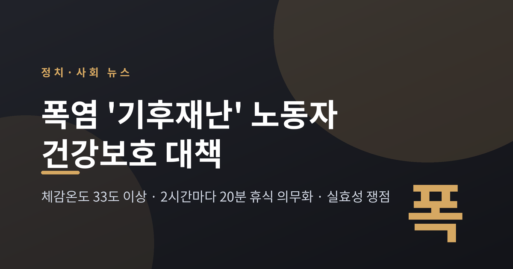
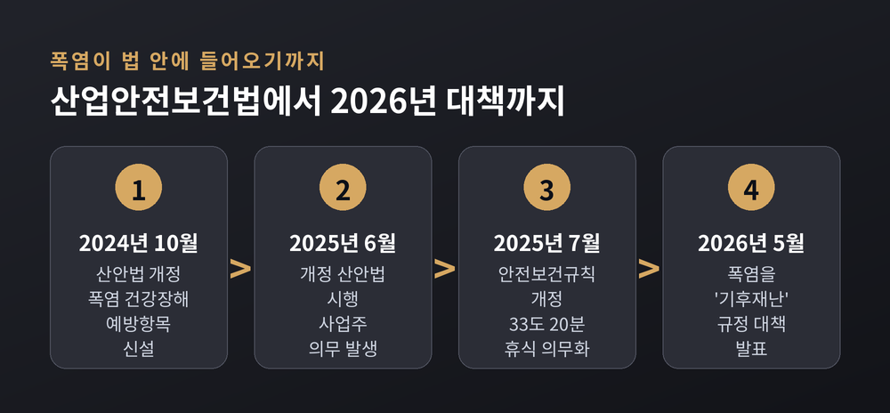
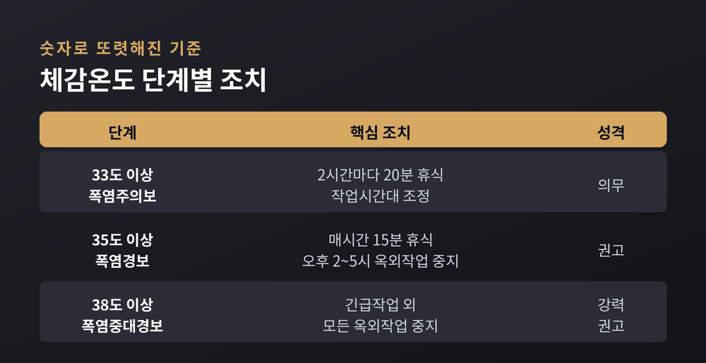
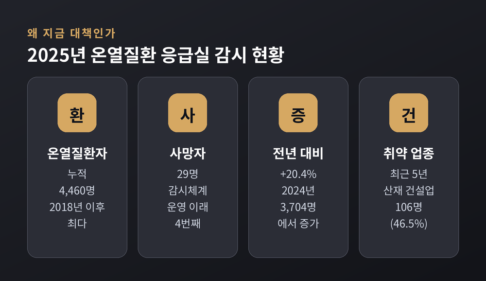
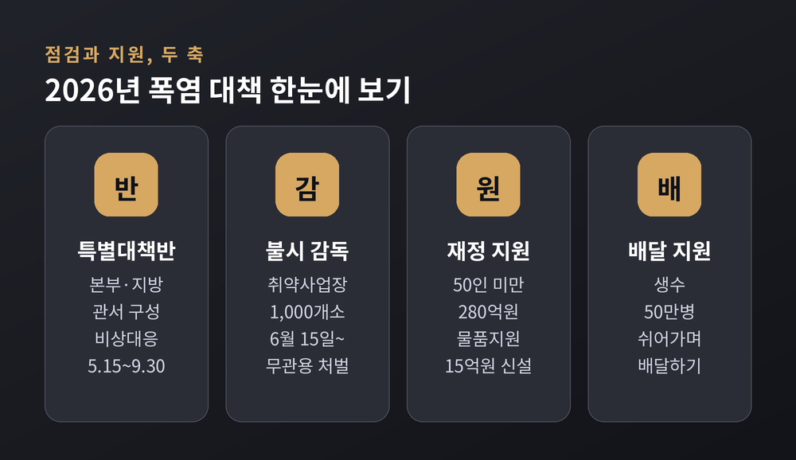
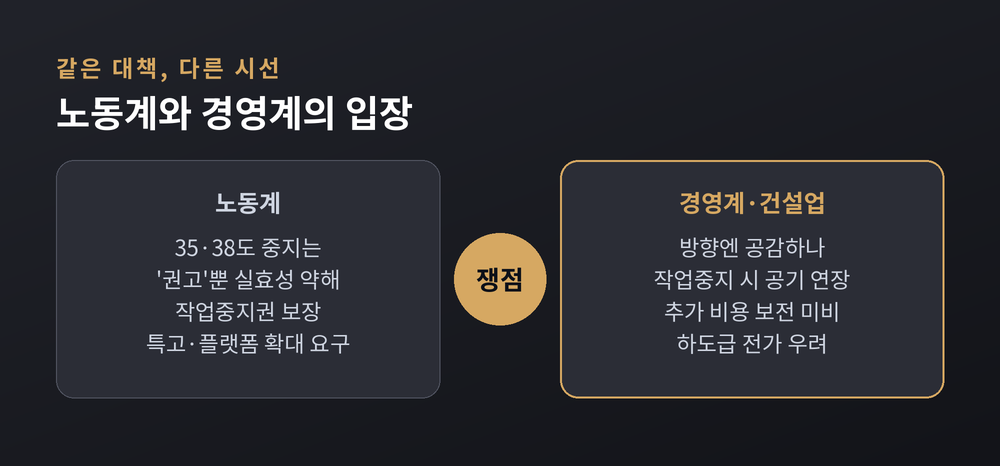

이번 글에서는 정부가 여름철 폭염을 '기후 재난'으로 규정하고 내놓은 노동자 건강보호 대책을 정리해 보겠습니다. 무엇이 법으로 정해졌고, 온열질환은 얼마나 늘었으며, 노동계와 경영계는 왜 다르게 보는지까지 차분히 짚어 드리겠습니다.

먼저 핵심부터 요약하겠습니다. 고용노동부는 2026년 5월 13일 「폭염 대비 노동자 건강보호 대책」을 발표하며 여름철 폭염을 '기후 재난'으로 판단했습니다. 이미 법으로 정해진 것은 하나입니다. 체감온도 33℃ 이상에서 일할 때는 2시간마다 20분 이상 쉬어야 합니다. 다만 35℃·38℃ 단계의 옥외작업 중지는 여전히 '권고'에 머물러, 이 지점이 이번 대책의 가장 큰 쟁점으로 남아 있습니다.
정부가 폭염을 재난의 이름으로 부르기 시작했습니다.
고용노동부(장관 김영훈)는 여름철 폭염을 '기후 재난'으로 판단하고, 대응을 체계적으로 관리하겠다고 밝혔습니다. 근거는 뚜렷합니다. 2025년 여름 평균기온은 기상 관측이 시작된 1973년 이래 역대 1위를 기록했습니다. 기상청은 2026년 여름 기온도 평년보다 높을 것으로 내다봤습니다.
대책의 방향은 한 문장으로 요약됩니다. "작년에는 휴식을 법으로 만들었고, 올해는 그 법이 현장에서 지켜지도록 행정력을 총동원한다." 범부처 폭염 대책 기간은 5월 15일부터 9월 30일까지로 잡혔습니다.

이 대책을 이해하려면 지난 2년의 입법을 먼저 봐야 합니다.
산업안전보건법은 2024년 10월 22일 개정돼 2025년 6월 1일부터 시행됐습니다. 이때 '폭염·한파에 장시간 작업해 생기는 건강장해'가 사업주가 예방해야 할 항목으로 새로 들어갔습니다. 폭염이 처음으로 법률의 언어 안에 자리 잡은 셈입니다.
이어 안전보건규칙이 2025년 7월 17일 개정·시행됐습니다. 핵심은 명확합니다. 체감온도 33℃ 이상 폭염작업에서는 2시간마다 20분 이상 휴식을 주는 것이 사업주의 의무가 됐습니다. 지키지 않으면 처벌 대상입니다.
기준을 조금 더 풀어 보겠습니다. 체감온도 31℃ 이상에서 하루 2시간 넘게 일하면 그때부터 '폭염작업'입니다. 사업주는 냉방·통풍장치를 두거나, 작업시간대를 조정하거나, 열 노출을 줄이는 조치 가운데 하나 이상을 하고 정기적으로 쉬게 해야 합니다.
여기서 의무와 권고가 갈립니다. 33℃ 휴식은 의무이지만, 35℃(폭염경보)에서 오후 2~5시 옥외작업 중지, 38℃(폭염중대경보)에서 모든 옥외작업 중지는 '강력 권고'일 뿐 강제가 아닙니다. 예전에는 이런 기준조차 흐릿했습니다. 지금은 숫자로 또렷해졌습니다. 남은 문제는 그 숫자가 현장에서 실제로 작동하느냐입니다.

숫자는 이 대책이 왜 나왔는지를 설명해 줍니다.
질병관리청 온열질환 응급실감시체계에 따르면, 2025년 온열질환자는 누적 4,460명으로 이 가운데 29명이 숨졌습니다. 한 해 전인 2024년 3,704명보다 20.4% 늘어난 수치이며, 2018년 이후 가장 많았습니다. 환자는 7월 하순에 몰렸고, 7월 8일 하루에만 259명이 발생했습니다.
일터로 좁혀 보면 위험은 특정 업종에 쏠려 있습니다. 최근 5년간 온열질환 산업재해 228명 가운데 건설업이 106명, 절반에 가까운 46.5%를 차지했습니다. 뜨거운 철제 구조물 옆에서 일하는 조선업, 환기가 어려운 물류·택배 창고도 취약 업종으로 꼽힙니다.
작업장 산재만 따로 봐도 증가세는 뚜렷합니다. 산재로 승인된 온열질환은 2020년 13건에서 2025년 65건으로 다섯 배 가까이 늘었습니다. 지난해 구미의 한 아파트 공사장에서는 20대 노동자가 온열질환으로 숨졌는데, 당시 현장에는 제대로 된 휴게시설이 없었고 정기적인 휴식도 이뤄지지 않았던 것으로 전해졌습니다. 통계 뒤에는 이렇게 구체적인 얼굴이 있습니다.

2026년 대책은 '점검'과 '지원'의 두 축으로 짜였습니다.
한쪽에서는 감독을 강화했습니다. 본부와 지방관서에 폭염안전 특별대책반을 두고, 6월 15일부터 폭염 취약사업장 1,000곳을 불시에 점검합니다. '폭염안전 5대 기본수칙'을 어기면 무관용 원칙으로 처벌한다는 방침입니다.
다른 한쪽에서는 돈과 물품을 풀었습니다. 50인 미만 소규모 사업장에는 이동식 에어컨 등 재정지원을 280억원으로 늘렸고, 체감온도계·쿨키트·생수를 주는 물품지원 15억원을 새로 만들었습니다. 민간 재해예방기관을 통한 기술지원은 14만 개소, 현장을 상시 순찰하는 '일터지킴이'는 1,000명 규모로 꾸려졌습니다. 배달 노동자를 위해서는 생수 50만병을 지원하는 '쉬어가며 배달하기' 캠페인도 마련했습니다.
업종별 접근도 세분화됐습니다. 건설업은 폭염특보가 뜨면 기관장이 직접 그늘막과 이동식 에어컨을 확인하고, 조선업은 용접작업을 맡은 협력사 노동자에 대한 원청의 보호 의무까지 들여다봅니다. 물류·택배 창고는 실내라도 관리 온도를 설정하도록 지도합니다.
방향은 분명 진전입니다. 다만 점검 대상이 1,000곳이라는 점, 지원이 대체로 옥외·소규모에 초점이 맞춰졌다는 점은 한계로 지적됩니다. 전국의 수많은 현장을 모두 살피기에는 손이 부족한 것도 사실입니다.

같은 대책을 두고 두 진영의 시선이 갈립니다.
노동계는 '권고의 벽'을 지적합니다. 민주노총 건설노조 등은 35℃·38℃ 단계의 작업중지가 의무가 아닌 권고여서 실효성이 약하다고 봅니다. 이들은 노동자가 스스로 작업을 멈출 수 있는 '작업중지권'을 실질적으로 보장하고, 산재보험 밖에 놓인 특수고용·플랫폼 노동자에게도 대책을 넓히라고 요구합니다.
경영계와 건설업계는 다른 고민을 내놓습니다. 방향에는 공감하지만, 작업을 멈추면 공사기간이 늘고 비용이 붙는데 이를 보전할 장치가 없다는 것입니다. "안전을 위해 멈췄는데 그 부담이 하도급업체에만 돌아가면 제도가 작동하기 어렵다"는 목소리가 나옵니다. 정부도 공사기간 연장과 추가 비용 관련 제도를 보완하겠다고 밝힌 상태입니다.
어느 쪽도 폭염이 위험하다는 사실 자체를 부정하지는 않습니다. 다툼의 핵심은 '누가, 어디까지, 무슨 비용으로' 그 위험을 감당하느냐에 있습니다.

정리하면 이렇습니다. 폭염은 이제 법과 행정의 언어 안에 들어왔고, 33℃ 2시간 20분 휴식이라는 최소한의 기준선이 생겼습니다. 그러나 그 위의 단계는 아직 권고에 머물러 있고, 비용을 나누는 방식도 정해지지 않았습니다.
"기준을 세우는 일과 그 기준이 현장에서 숨 쉬게 하는 일은 다른 일입니다."
법이 그늘을 만들었다면, 그 그늘 아래 실제로 사람이 앉아 쉴 수 있는지는 이번 여름이 답해 줄 것입니다.